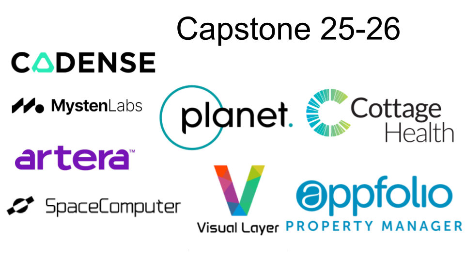
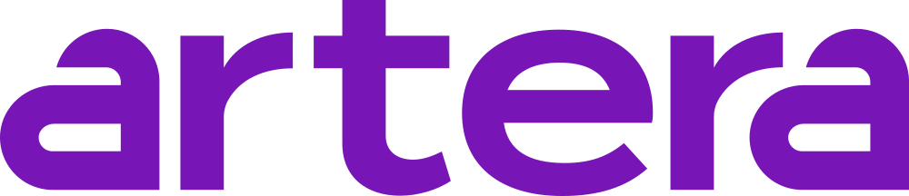
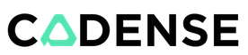
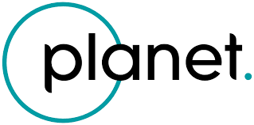
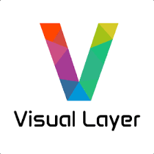

Sponsoring a Team

The heart of the experience of this course is an industry-sponsored project in which students get the opportunity to work on real world challenges provided and mentored by corporate partners. This has been a very popular course over the years and is growing steadily. It has provided our students with the chance to work as a team to solve all aspects of an engineering problem from concept, prototype, testing and deployment. It has benefited our corporate partners by giving them the opportunity to work with the students, observe them solving these challenges in a logical manner, and creating potential interns or future employees. Participation also allows for a very visible corporate presence on the UC Santa Barbara campus.
Appfolio
AppFolio is the technology leader powering the future of the real estate industry. Our innovative platform and trusted partnership enable our customers to connect communities, increase operational efficiency, and grow their business. For more information about AppFolio, visit appfolio.com.
Artera

Making Healthcare #1 In Customer Service Great customer experiences and healthcare are rarely synonymous—but they should be. That’s what drives us to help foster better communication between you and your patients.
Cadense

With ongoing scientific research, Cadense aims to revolutionize the way people with walking difficulties experience movement. Our ultimate vision is to improve the cadence of life for everyone, enabling mobility and empowerment.
Cottage Health

At Cottage Health, we’re dedicated to delivering exceptional, safe care through innovation, collaboration, and continuous improvement. Discover how our award-winning team is raising the standard of healthcare.
Mysten Labs
At Mysten Labs, we are building critical infrastructure to enable a more decentralized internet. Our products are made for builders, web3 enthusiasts, and explorers of new interactive models
Planet Labs

Planet provides the leading web-geo platform with the highest frequency satellite data available and foundational analytics to derive insights, empowering users across the world to make impactful, timely decisions.
Space Computer
SpaceComputer is building cypherpunk crypto systems for the space frontier: The first tamper-proof computer that elevates tokenization to orbit, removing earth-based barriers to free market dynamics and enabling the advent of genuine human liberty.
VisualLayer

Visual Layer’s AI empowers everyone to organize, explore, enrich and extract valuable insights from vast collections of unstructured video and image data with precision, efficiency and at scale.